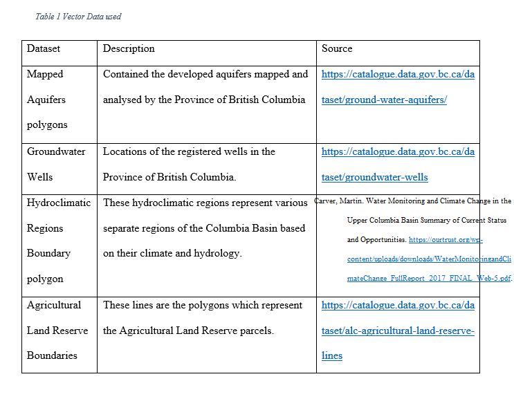

ArcGIS Pro (ESRI 2020): - This proprietary software from ESRI was used as it provides an intuitive suite of geospatial analysis and thematic map creation. Most of the previous studies have also used ArcGIS software, making it a more suitable option over QuantumGIS (QGIS 2021). QuantumGIS (QGIS 2021): - QGIS is an open source and free software with many capabilities. It is recognized for its wide variety of plugins and community for support. QGIS has a plugin called QGIS2WEB, which was used to translate the layers used into a webmap. Leaflet (Leaflet 2021): - Leaflet is an open source Javascript library as its main library and can be easily merged into the HTML code and CSS styling of websites. This provides a powerful platform that allows for layer selection, querying, and customization. GitHub (GitHub 2020) - GitHub is a repository platform which allows for the sharing of code, version control, and many other capabilities. For this project, GitHub is used to house resulting layers (reclassified layers and the GW Potential result from the weighted overlay). Another aspect of GitHub that this project takes advantage of is GitHub Pages, where a free website can be hosted and customized. Combining all these tools, the resulting webmap, and this report will be available for people to see online.
The first step involved identifying the proper variables to be used in the overlay analysis. Diaz-Alcaide and Santos (2019) identified that lithology (geology), geomorphology, soil, land use/land cover (LULC), topography, lineaments, drainage- and slope-related variables, and rainfall are some of the most used environmental variables for analysis. For this exploratory phase 1, the variables slope, aquifer lithology(subtype), soil drainage, LULC, and precipitation were used as the factors for aquifers in the basin. Other data included for reference are the boundaries of different regional districts and the Columbia Basin, as well as regional landscapes (Utzig et al. 2019) (hydroclimatic regions), mapped aquifer polygons, and groundwater well location points. The data was sourced from a variety of databases as described in Table 1. Furthermore, consultation with an expert in aquifers within the Columbia Basin was carried to identify factors which greatly impact aquifer recharge in the basin.
The first step in the analysis was to prepare the thematic layers to be utilized. Raster layers acquired through HectaresBC all needed to be reclassified into classes to provide the categories for the aquifer recharge potential model (or analysis…). For example, a low slope value would be reclassified as 4, since it allows for better water percolation. Following examples of research (Mohammadi-Behzad et al. 2019; Arshad et al. 2020; Souissi et al. 2018; Lee et al. 2015) highlighted in a recent review (Diaz-Alcaide 2019). These thematic layers will then be used during the data analysis described in the next section. Aquifer subtype was acquired as a polygon layer, so the polygon to raster tool was used to transform the mapped aquifer polygons dataset into raster values based on the “Subtype” (aquifer geology Table 3.) field and then reclassified to match the rest of the raster layers. Reclassification was done using the reclassify tool to create values which would represent the influence of a variable in a scale from 1 to 5 (1 is being no/very little impact, and 5 being high impact).
Slope is an important variable, as it will determine whether water can enter the soil and ultimately the underlaying aquifer. The slope raster was downloaded from Hectares BC and then reclassified. FIGURE 2 below shows the reclassified output of slope.
Mean Annual Precipitation for the most recent decade was downloaded from Hectares BC, and it includes the mean annual precipitation in millimeters. Figure 3 shows the reclassified precipitation layer and its corresponding classes.
Aquifer subtype was derived from a polygon layer downloaded from DataCatalogue BC. This is the “Mapped Aquifers” layer, which includes a variety of information regarding aquifers. For the purpose of this research, we rasterized the polygons based on aquifer subtype, and set a reclass size of 30 meters. Figure 4 shows the resulting reclassified layer for aquifer subtype.
Soil Drainage was also downloaded from Hectares BC, and it provides and insight into the potential drainage of the soil in a specific cell. The reclassified and used layer is shown on Figure 5.
Land Use and Land Cover raster was downloaded from HectaresBC, and it provides an insight into the current land use surrounding aquifers. Figure 6 displays the reclassified layer for LULC.
A combination of research from British Columbia (Groundwater Solutions Inc. 2019) and international examples (Mohammadi-Behzad et al. 2019, Arshad et al. 2020, Souissi et al. 2018, Lee et al. 2015) of aquifer potential mapping were used to carry out the analysis and determining factors affecting aquifer recharge. Following examples identified with similar variables as the ones identified for this project, and an Analytical Hierarchy Process (AHP) (Díaz-Alcaide and Martínez-Santos 2019) to carry out a weighted overlay analysis. AHP is a multi-criteria decision-making process which is commonly used in water resources management. It involves using a pair-wise comparison which contrasts one variables weight over another one (Machiwal et al. 2009). With the use of other studies (Díaz-Alcaide and Martínez-Santos 2019) as well as input from an expert in the area, weights were given to the various variables used (Figure 7 and 8). The pairwise comparison allows us to identify the proper weights which were used for the overlay analysis. Figure 8 uses the pairwise comparison by asking the user whether A or B is more influential than the other, then showing the results (Figure 7)
To provide an approachable platform to display the results of this analysis and its significance, a website was created using the open source platform GitHub. Through GitHub, and new GitHub Page was created, which hosts all the information found on this report and the web map. Another important aspect is exporting the layers to be displayed in the appropriate format for the webmap. Design of the website The design of the website follows a style which resembles an academic paper. There is a “Home” page which serves as an introduction and displays a web application. The other pages are “Methods”, “Results and Conclusions”, “References and Resources”, and “About Me”. All the pages were created as separate html files, which are then populated with their respective information from this report. To provide the web mapping application, Leaflet was used in order to create a personalized map interface to allow for selectable layers, pop ups with aquifer information, and search for aquifers by name. Under the “References and Resources” page, the website also provides information and resources for agricultural producers and land owners in regards to best practices when it comes to well monitoring and groundwater protection set out by the Provincial Government and other environmental organizations, as well as links to the various sources and databases for groundwater data in the province.
This project depends on the quality of the data that is freely available. One of the limitations that this project faced was with accuracy testing via ground truth analysis. Another issue was the lack of up-to-date available climate data for the region, as in previous studies (Carver 2017) . Although thorough research and consultation was carried out to identify the variables (slope, LULC, aquifer subtype, precipitation, and soil) and their respective weights, that could influence aquifer recharge potential, there is still much we do not know regarding the recharge of aquifers. The weights of influence on aquifer recharge of each variable chosen are subjective, and the weights have bias introduced, and therefore possible error. Another assumption identified is that climate is and will continue to change, and since this research uses mean annual precipitation of the past 10 years, this analysis does not take into consideration the possible effects that climate change may have on aquifer recharge.